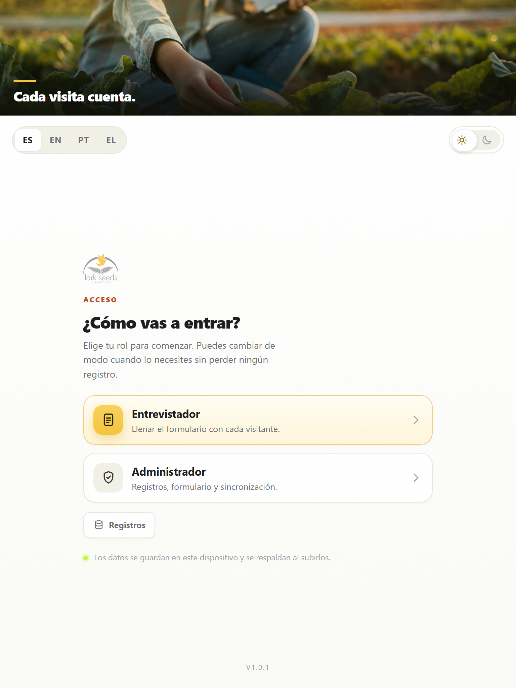
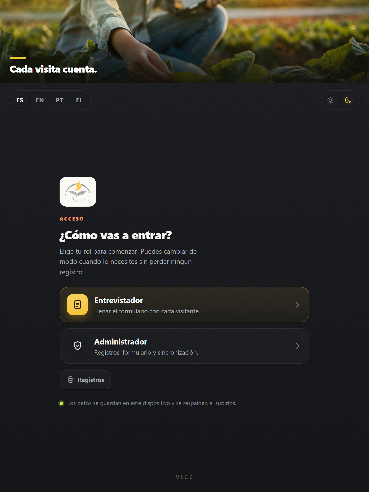
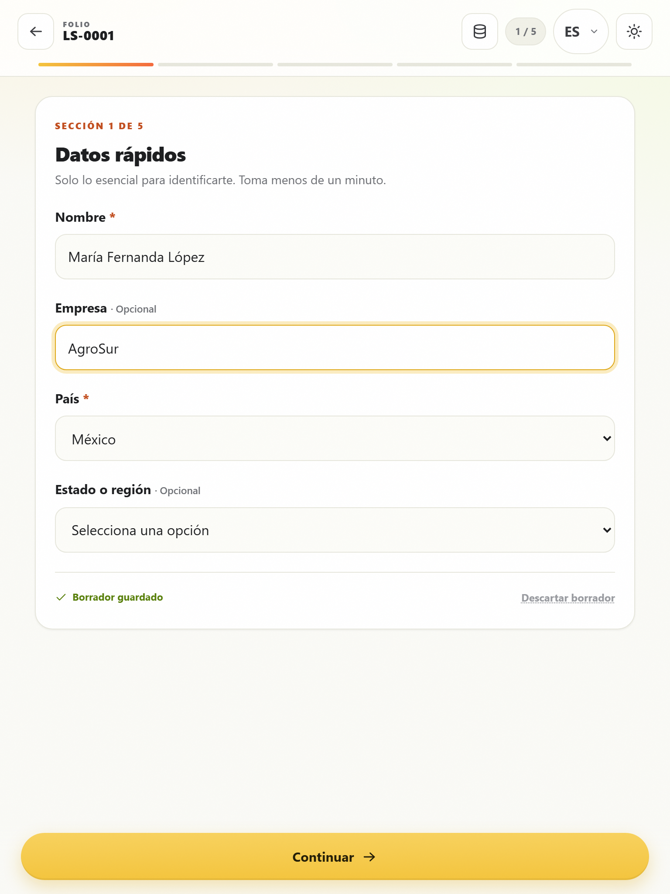
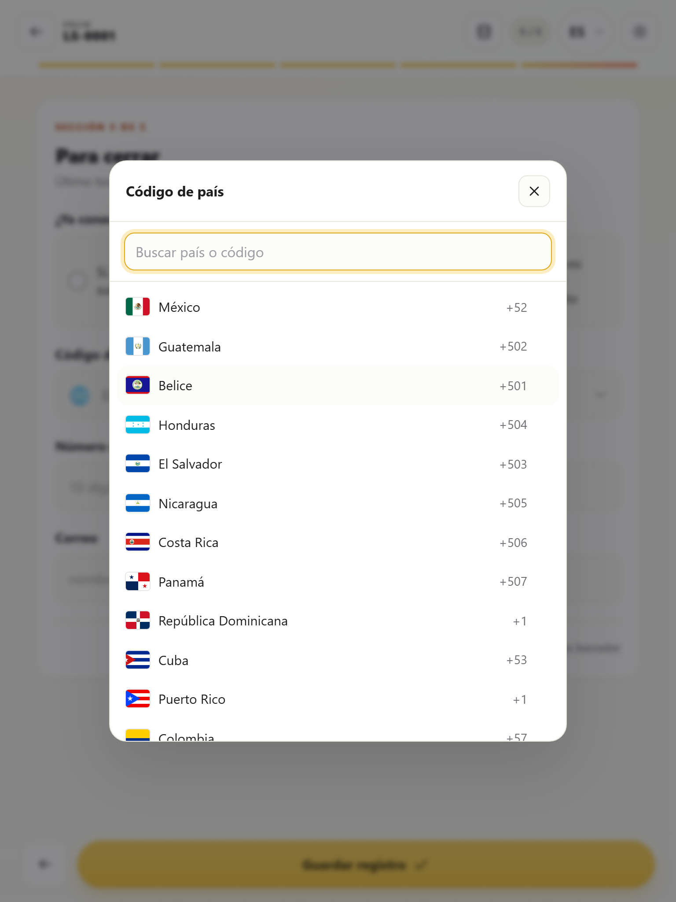
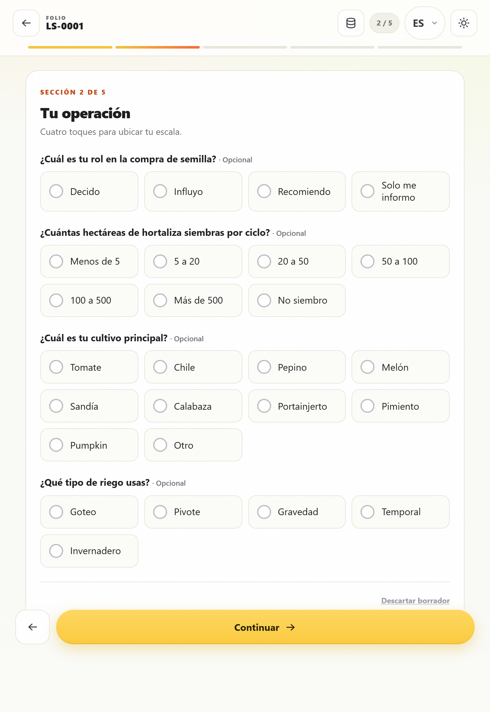
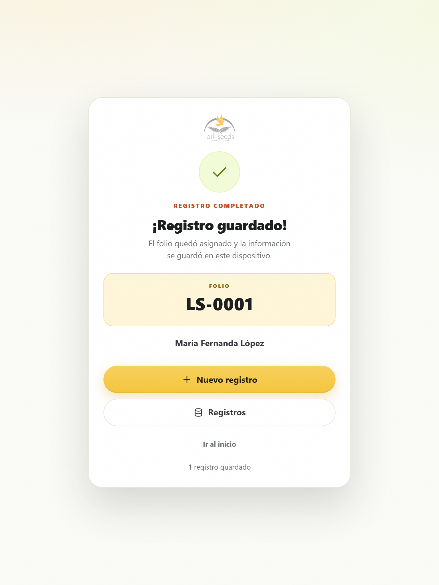

1Qué es la aplicación
Una aplicación web instalable que funciona sin conexión. Cada entrevista se guarda en el iPad y queda disponible para el equipo cuando haya internet.
Formulario guiado
Cinco secciones con validación, folio automático y autoguardado.
Siempre disponible
Puedes capturar aunque no haya internet en el stand.
Datos seguros
El avance se guarda en el iPad y no se pierde al cerrar la app.
2Instalar en el iPad
La primera instalación necesita internet. Después, la aplicación abre y funciona sin conexión.
- Abre Safari y visita larkseeds.growlinkmx.com.
- Espera a que cargue por completo la pantalla de inicio.
- Toca el botón Compartir (el cuadro con la flecha hacia arriba).
- Elige Añadir a pantalla de inicio y confirma con Añadir.
- Abre la aplicación desde el nuevo icono y espera unos segundos: así se guarda completa en el dispositivo.
- Activa Modo avión y vuelve a abrirla para comprobar que funciona sin internet. Desactiva el modo avión al terminar.
3Pantalla de inicio
Entra como entrevistador, cambia el idioma y ajusta el tema claro u oscuro.

Cómo entrar
- Toca Entrevistador para abrir el formulario.
- El folio se asigna automáticamente al iniciar.
Si la aplicación no abre el formulario, avisa al coordinador de la expo.
Idioma y tema
- Selector ES · EN · PT · EL en la esquina superior.
- Interruptor de sol/luna para tema claro u oscuro.
El idioma cambia los textos de la interfaz; los países y regiones se muestran siempre en español.

4Capturar una entrevista
El formulario se divide en cinco pasos. El avance se guarda solo, incluso si cierras la aplicación.

Qué debes saber
- Los campos con asterisco son obligatorios; el sistema avisa si falta alguno.
- Al elegir un país, la lista de regiones o estados se actualiza sola.
- Las preguntas con Otro permiten escribir una respuesta libre.
- El botón Atrás conserva lo que ya escribiste.
- El país se elige de una lista con banderas y lada, junto al número de WhatsApp, que acepta solo dígitos (máximo 10).
- Puedes salir y volver: el borrador se retoma donde lo dejaste.


Terminar y guardar
En el último paso, toca Guardar registro. Verás la confirmación con el folio asignado.

5Buenas prácticas y problemas
Rutina recomendada para la expo y solución rápida de situaciones comunes.
Rutina diaria
- Al iniciar: carga el iPad, abre la app desde el icono, toca Entrevistador y verifica el folio.
- Durante la expo: captura cada visita y confirma el folio al guardar.
- Al terminar: deja el iPad conectado a internet para que el equipo sincronice la información.
- Si algo falla: avisa al coordinador con el folio y una captura de pantalla.
Problemas comunes
| Situación | Qué hacer |
|---|---|
| No hay internet en el stand | Captura normal. La entrevista se guarda en el iPad y se envía después. |
| La app no abre sin conexión | Ábrela una vez con internet desde el icono y espera la carga completa. |
| El formulario pide un campo | Revisa los campos con asterisco; el sistema resalta el que falta. |
| No estoy seguro de haber guardado | Vuelve a abrir el formulario: el borrador se retoma donde lo dejaste. |
| El folio no aparece | Regresa al inicio y toca de nuevo Entrevistador. |
| La app se ve pequeña o con barras | Ábrela desde el icono de la pantalla de inicio, no desde Safari. |
| Necesito cambiar de idioma | Usa el selector ES · EN · PT · EL de la esquina superior. |